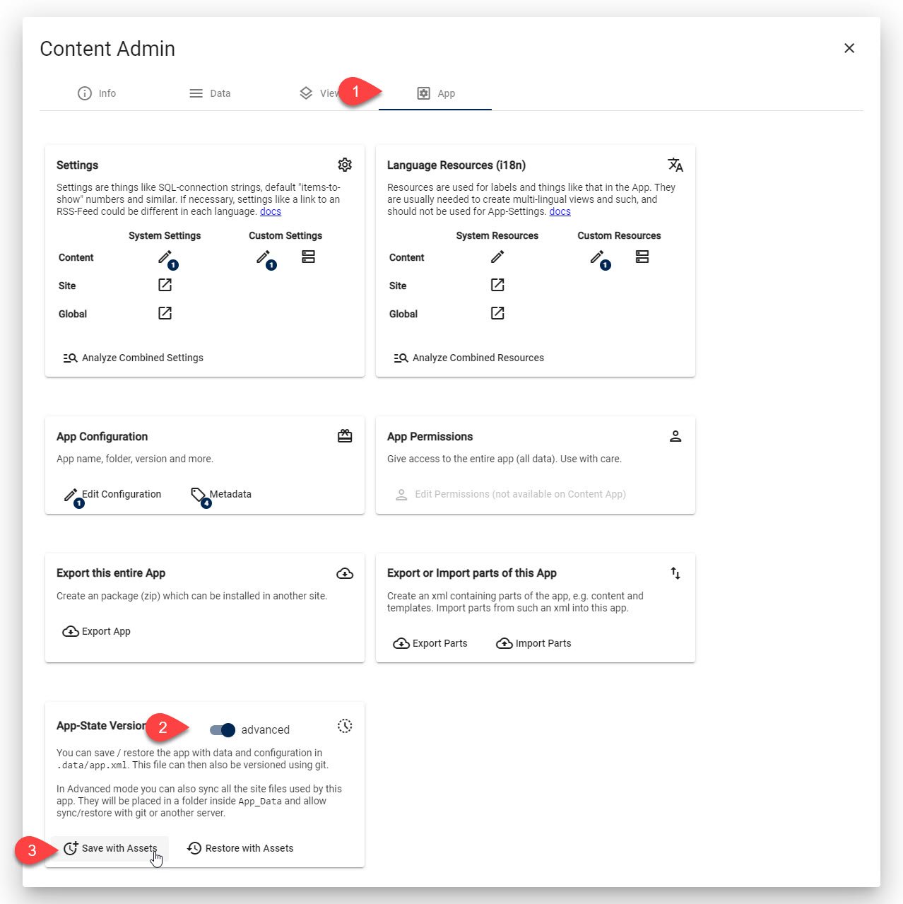
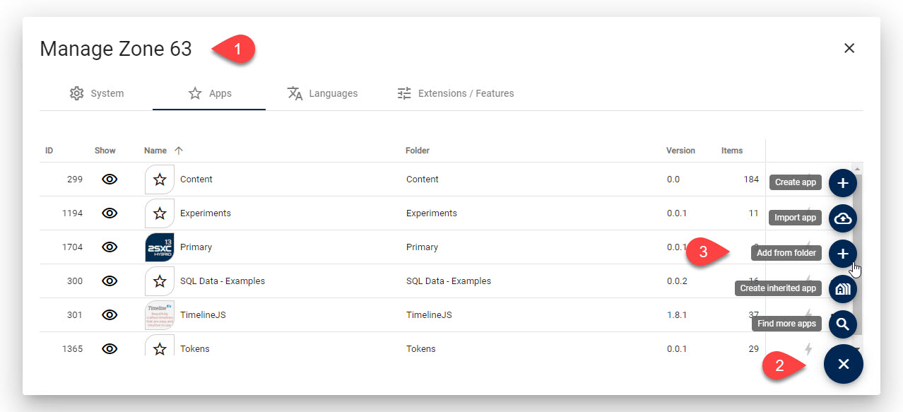

Sync Apps from Dev ➡️ Production - Deploy App with Git-Sync
2sxc 15 introduces the ability to import an entire App from the file system. This is ideal when your code is on a versioning server such as Github. It allows you to push your changes to the git-server, and then pull it into a folder in the 2sxc. You can then just go to the UI and import the app directly.
Tip
This process also allows you to later sync changes the same way, if you can sync the entire App.
ü¶∏üèæ‚Äç‚ôÇÔ∏è Requires Patron feature AppSyncWithSiteFiles
Step 1: Export Everything to File System
Note that the app is only complete if you also export the App-State in the Admin UI. Ideally you would export it together with all the content-assets (if there are any).
Step 2: Sync with Git / Versioning
Typically you will have your App in git-versioning. So after saving the entire state, you will want to commit and push.
In the new location, go to the site specific 2sxc folder.
Then git-clone the repo to a subfolder of your choice.
We recommend that it has the same name as the subfolder you used in development.
Step 3: Import Directly from File System
You can now go to the Apps-Management and import the App directly from the file system.
